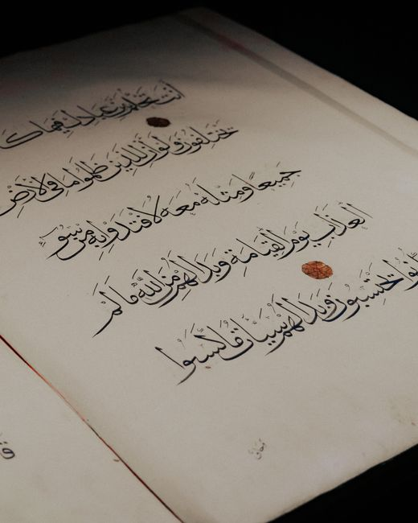

Is the Injil the same as the four Gospels?
A book given to Jesus, and books written about him: two different categories.
A popular missionary argument says the Qur’an traps itself: either the Bible is preserved and refutes Islam, or it is corrupted and the Qur’an was wrong to affirm it. The Qur’an holds neither position. This site reads the verses the argument depends on, in Arabic and in context, alongside the classical scholars who answered it long ago.
As its advocates commonly present it. Open a line to read the reply.
Agreed. God revealed the Tawrat to Moses and the Injil to Jesus Q 3:3. The question is what those words refer to.
The Qur’an speaks of one Injil given to Jesus. The New Testament is twenty-seven books written about him by others. The argument rests on treating these as the same thing. Read §2
“Judge by what God revealed therein” Q 5:47 points to revelation still present in what they held. It does not certify every word. Jesus told his hearers to obey the scribes while condemning their additions Matt 23:2–3. Read §3
Earlier books were entrusted to their scholars Q 5:44. Only of the Qur’an does God say “We will guard it” Q 15:9. A trust given to people can be broken by people. Read §4
Without P2 and P4 the dilemma has nothing left. The Qur’an’s own position is a third option: it confirms what remains true in earlier scripture and stands as judge over it Q 5:48. Read §5
Verdicts are this site’s assessment of each premise.
Read the argument as its advocates make it, then the reply, then check the sources yourself.
The argument stated fairly, with the verses its advocates cite: Q 5:47, 5:68, 10:94 and 6:115.
Read the claim → Step 2 · The responseA premise-by-premise reply grounded in the Arabic text and the classical commentaries.
Read the response → Step 3 · The evidenceQur’an texts, tafsir, manuscript projects and Christian scholarship, linked so you can verify every claim.
Browse resources →A dilemma only works when its two options are the only ones available. Here they are not.
Then it contradicts the Qur’an on the crucifixion, the Trinity and the sonship of Jesus, and Islam is false.
Then the Qur’an was wrong to call it guidance and light and to tell Christians to judge by it, and Islam is false.
The Qur’an says earlier scripture contains real revelation, and also that some “distort words from their places” and “forgot a portion” Q 5:13. So it confirms what agrees with it and corrects what does not. The dilemma never addresses this position.
وَأَنزَلْنَا إِلَيْكَ الْكِتَابَ بِالْحَقِّ مُصَدِّقًا لِّمَا بَيْنَ يَدَيْهِ مِنَ الْكِتَابِ وَمُهَيْمِنًا عَلَيْهِ
“We have sent down to you the Book in truth, confirming the scripture that came before it and as a guardian over it.”
Q 5:48 · al-Mā’idahScripture can be affirmed as God’s word while its keepers are accused of altering it. The Bible does exactly this.

“How can you say, ‘We are wise, and the law of the LORD is with us’? But behold, the lying pen of the scribes has made it into a lie.”
Jeremiah 8:8 · ESV
“The scribes and the Pharisees sit on Moses’ seat, so do and observe whatever they tell you, but not the works they do.”
Matthew 23:2–3 · ESV
Jeremiah affirms the Law and accuses the scribes of falsifying it in the same breath. Jesus sends his hearers to the teachers of the Law while condemning the traditions they added. If affirming a scripture while charging its custodians with corruption is a contradiction, the Bible commits it first. If it is not, the Islamic Dilemma has no force.
The words muṣaddiq and muhaymin, and what they imply about earlier scripture.
Read commentary →A book given to Jesus, and books written about him: two different categories.
Q 10:94 is a conditional addressed to the Prophet, and the commentators read it that way.